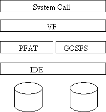
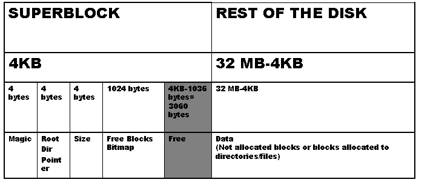

CMSC 412 Project #5
File System (Part 1)
Due Friday, May 7, at 6:00pm
New project files
Introduction
The purpose of this project is to add a new filesystem to GeekOS, as well as the standard operations for file management
GOSFS - GeekOS FileSystem
The main part of this project is to develop a new filesystem for the GeekOS. This filesystem will reside on the second IDE disk drive in the Bochs emulator. This will allow you to continue to use your existing PFAT drive to load user programs while you test your filesystem. The second IDE disk's image is called diskd.img.
GOSFS will provide a filesystem that includes multiple directories and long file name support.
The Mount system call allows you to associate a filesystem with a place in the file name hierarchy. The Mount call is implemented as part of the VFS code we supply. You will need to modify the init code to call Mount to mount the PFAT file system on drive 0 onto /c.
Then you can mount the GOSFS file system on drive 1 onto /d, for instance.
VFS and file operations
Since GEEKOS will have two types of filesystems (PFAT and GOSFS), it will have a virtual filesystem layer (VFS) to handle sending requests to an appropriate filesystem (see figure below). We have provided an implementation of the VFS layer in the file vfs.c. The VFS layer will call the appropriate GOSFS routines when a file operation refers a file in the GOSFS filesystem.

The System Call layer is already implemented in syscall.c and the PFAT in pfat.c. Thus the only component you need to take care of is the GOSFS one.
Each user space process will
have a file descriptor table that keeps track of which files that process can
currently read and write. Any user process should be able to have up to 10
files open at once.
The file descriptors for a user process are kept in the files[MAX_OPEN_FILES] array in struct User_Context. Note that not all the entries in the files
are open files, since usually a process has less than 10 files open at once. If
the field openFile.fsType == FS_TYPE_NONE that represents a free slot (file
descriptor not used). But the good news
is that file descriptor management is already implemented for you (see Open() function in vfs.c).
Your filesystem should support fixed length filenames (at most 64 bytes, including a null at the end for a file/directory name). A full path to a file will be no more than 1024 characters.
You should keep track of free disk blocks using a bit vector (as described in class). A library called bitset is provided (see bitset.h and bitset.c) that manages a set of bits and provides functions to find bits that are 0 (i.e. correspond to free disk blocks).
All disk allocations will be in units of 4KB (i.e. 8 physical disk blocks). Thus one bit in a bitset corresponds to a 4KB block. A bitset that is 8192 bits (1024 bytes) large will obviously keep track of 8192 * 4KB = 32 MB of data.
Directory Structure
See the recitation slides for details on directory structure. Each directory in GOSFS takes up a single disk block. The structure of the directory is defined in gosfs.h. A directory is an array of GOSFSfileNodes (36 elements, since they have to fit in a single 4KB block). Each filenode can represent either a file in the directory or a subdirectory.
The filenode for a directory is distinguished by the isDirectory bit. The location of the block that holds the data for the directory will be stored in the first entry in the blocks array of the directory's filenode (hence entries blocks[1]..blocks[7] are unused).
Files
Unlike directories, that have a fixed size of one blocks (irrespective of how many files the hold), files can take up an arbitrary number of disk blocks. You will use a version of indexed allocation to represent the data blocks of your filesystem. The blocks field (GOSFSfileNode, gosfs.h) keeps track of data blocks for a file. The first eight 4KB-blocks are direct blocks, the ninth points to a single indirect block, the tenth to a double indirect block. See the recitation slides for a detailed layout.
New System Calls
You have to implement the sematics of the new system calls as described below. As you see, the semantics is very similar to the UNIX one.
· All user-supplied pointers (e.g. strings, buffers) must be checked for validity. The checking functions are automatically called in vfs.c but you need still to implement Validate_User_Memory().
· The new syscalls in syscall.c.add assume you use paging (and add 0x80000000 to user pointers to convert them to kernel ones). If your paging doesn't work then use your Project 3 as a base, instead of Project 4. You'll still get full credit, but you need to replace (+ 0x8000 0000) with (+ User_Context->program) or whatever mechanism you used in P3 to convert user pointers to kernel pointers.
· Although the Mount call is implemented as part of the VFS code we supply, you 'll still have to add code to the Mount() function in vfs.c to check the magic number prior to mounting a GOSFS disk.
|
System Call User Function |
Return on success |
Return on failure |
Reasons for failure |
Comment |
|
SYS_MOUNT
Mount(char *dev, char *prefix, char *fstype) |
0 |
-1 |
· a filesystem already mounted under name · illegal value for one of the parameters |
Your Mount function should not "validate" the filesystem settings except for magic and version fields, and that block size is support-able (a multiple of 512, or 512/1024/4096 at least). Other items, e.g., the number and start location of inodes and the total number of blocks, can be arbitrary. |
|
SYS_OPEN
Open(char *name, int permissions) |
new file descriptor number |
-1 |
· name does not exist (if permissions don't include O_CREATE ) · path to name does not exist (if permissions include O_CREATE ) · O_WRITE and O_CREATE not allowed for directories, use CreateDirectory instead |
· there's no create syscall, so setting O_CREATE will create the file. If the file exists, the call succeeds (return >= 0) but its data contents is not affected. · Should NOT create directories recursively if needed, e.g. Open("/d/d1/d2/d3/xFile", O_CREATE), will NOT create d1 inside of d, d2 inside of d1, etc. if they don't exist already. If the leading path /d/d1/d2/d3 does not exist, the syscall fails, returning -1 · The permissions values are flags and may be or'ed together in a call. For example:
|
|
SYS_CLOSE Close(int fd) |
0 |
-1 |
· fd not within 0-9 · fd is not an open file |
|
|
SYS_DELETE Delete(char *name) |
0 |
-1 |
· name does not exist · name is a non-empty directory |
if Delete(file) is called and file is still open in other threads or even in the thread that called Delete(), all the subsequent operations on that file (except Close()) should fail |
|
SYS_READ Read(int fd, char *buffer, int length) |
number of bytes read |
-1 |
· fd not within 0-9 · fd is not an open file · fd was not open with O_READ flag |
· it's OK if return value < length, for instance reading close to end of file · increase the filePos, if successful There is special behavior when SYS_READ is called on a directory:
dirEntry is defined in fileio.h |
|
SYS_WRITE Write(int fd, char *buffer, int length) |
number of bytes written |
-1 |
· fd not within 0-9 · fd is not an open file · fd was not open with O_WRITE flag · fd is a directory |
· increases filePos is successful · "Grow on write"- allocate blocks "on the fly" if past end of file |
|
SYS_STAT Stat(int fd, fileStat *stat) |
0 |
-1 |
· fd not within 0-9 · fd is not an open file |
|
|
SYS_SEEK Seek(int fd, int offset) |
0 |
-1 |
· fd not within 0-9 · fd is not an open file · offset > fileSize |
offset is an absolute position; could be equal to fileSize, then Write appends, see above |
|
SYS_CREATEDIR CreateDirectory(char *name) |
0 |
-1 |
· name already exists, as file or directory · regular file encountered on the path to name |
Should create directories recursively if needed, e.g. CreateDirectory("/d/d1/d2/d3/d4"), will create d1 inside of d, d2 inside of d1, etc. if they don't exist already. This operation should be atomic, in the sense that either the whole directory chain is created or no directory is created. |
|
SYS_FORMAT Format(int drive) |
0 |
-1 |
· illegal value for drive (it must work with 1, higher is optional) · drive is in use, i.e. mounted |
formats a drive with GOSFS; don't need to support formatting with PFAT ; don't need to format in init code; so you can save your data between sessions |
Disk Layout

A guideline is provided above. First block (0) is called SUPERBLOCK, and contains filesystem housekeeping data. Blocks >= 1 contain files and directories.
· The Magic number at the very beginning should be 0xDEADBEEF. This tells you that the disk has a GOSFS filesystem on it. If you try to mount a drive and you don't find the magic signature, return error.
· Root Dir Pointer holds the block number of the block containing the root directory.
· Size is the size of the disk, in 4KB blocks. (32M / 4K = 8K for the example above)
· Free Blocks Bitmap is : Size bits large, that is Size/8 bytes large. ( 8K / 8 = 1K for the example above). Every block has an associated bit.
When you do a Format() , you make a raw disk usable with GOSFS. That is:
Keep in mind that the superblock and root directory have no associated GOSFSfileNode.
Notes
You do not need to consider situations where two processes have the same file open. You do not need to consider situations where one process opens the same file twice without closing it in between.
All changes should be committed to disk before the system returns from the syscall that made the changes. If you cache any structures while processing a call, you should write any changes to them to disk before returning from the syscall.
If a read() is called on a directory, the data returned should be in the form of an array of dirEntry structures. The length argument and the return value will indicate the number of entries to read and the number of entries that were read, rather than the number of bytes.
Requirements
· Make sure your Mount() works well, so that we can test your project. If we cannot Mount() a GOSFS, we cannot grade your project.
· You might also want to mount "/d" (dee) automatically in Main() to speed up your testing, but the code you submit should not mount "/d" automatically. "/c" (cee) should be mounted automatically in Main() though.
· You should support disk sizes of at least 32 MB. More than 32 MB is optional. Following the procedure described in the "How to create an arbitrary size big diskd.img" section above, in your submitted project, when someone types gmake, a 32 MB file should be created.
· You should support file sizes of at least 5 MB (double indirect threshold crossed, yes). More than 5 MB is optional.
Testing
As you saw at the top, in src/user there are some programs that can be used to test your file management syscalls: cp,c, ls.c, mkdir.c, mount.c, p5test.c.